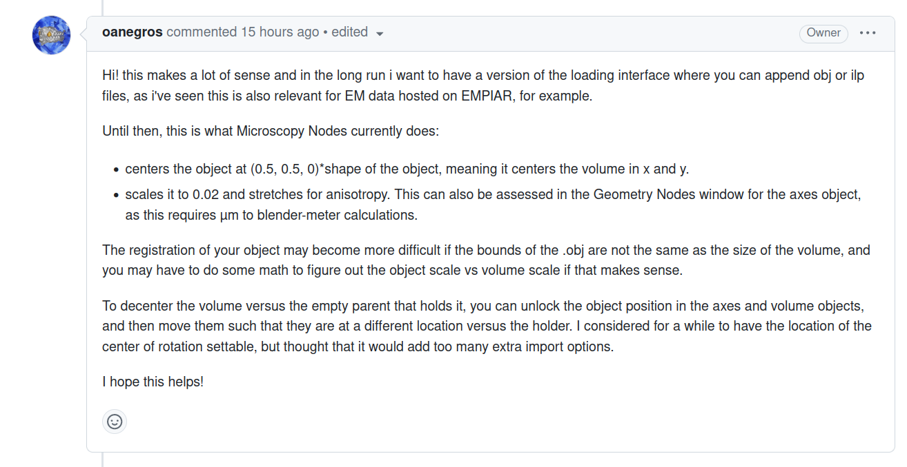

import matplotlib as mpl
import matplotlib.pyplot as plt
import os
from scipy import ndimage
from blender_tissue_cartography import io as tcioVolumetric rendering of .tif data
Option 1 - MicroscopyNodes
To 3d-render the underlying data, we can use the MicroscopyNodes plugin. Go to the right hand panel:

So far this does not yet work as intended - MicroscopyNodes rescales coordinates in such a way that they do mot overlap with the mesh. Fixing this should be a simple matter of translating and rescaling the objects created by MicroscopyNodes. To do: need to figure out what scaling factor the plugin uses. This is what the MicroscopyNodes developer says:
The other problem I see is that MicroscopyNodes seems to rapidly crash my blender instance - consumes a lot of resources. Maybe better on a system with a GPU?
Option 2 - custom .vdb
See here: https://surf-visualization.github.io/blender-course/advanced/python_scripting/4_volumetric_data/
Unfortunately, not really possible, since it’s only supported on Linux systems. But blender comes with its own copy of pyopenvdb I think?